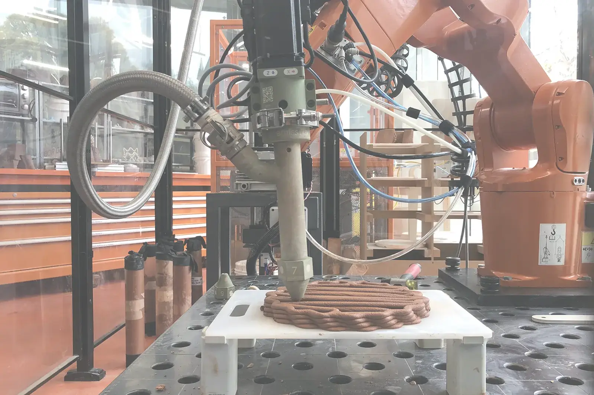

create digital problem solving workflows related to BIM, structural analysis and gamification
using generative design, polygonization and parametric configurators to create advanced architectural and structural designs

producing ready-to-manufacturing files for rapid prototyping and digital fabrication
Masterthesis - TU Delft 2023
Computational Design Architecture
Master Studio- University of Melbourne 2022
Computational Design Architecture Digital Fabrication
Design Studio - TU Delft 2021
Computational Design Architecture
Bachelor Thesis - RWTH Aachen University 2019
Computational Design Digital Fabrication
Coursework - University of Melbourne 2022
3D Printing Digital Fabrication
Student Competition - TU Delft 2021
3D Printing Digital Fabrication
Design Competition 2021
File-to-Factory Processes Digital Fabrication
Cousework - RWTH Aachen University 2018
Architecture
„Enthusiastic in transforming the AEC industry towards carbon neutrality. Enhancing modular building through algorithms and artificial intelligence to produce customizable and eco-friendly architecture.“ After gaining my Bachelor in Architecture at RWTH Aachen 2019 I worked at gmp architects and LRO architects in several BIM- and design projects. In my master's at TU Delft I specialized in computational design and digital manufacturing.
Are you interested in my work, have further questions or are open for collaborations? Don't hesitate and contact me!